Definition of done
Definition of done is the contract for when work may leave implementation: it ties acceptance, backlog truth, tests, CI, and risk/docs together. If something is waived, record who approved the waiver. Epic “done” depends on in-scope stories — see SDLC.md §3–4.

Story (or equivalent)
- Acceptance criteria in the spec are met (or explicitly waived with reason).
- The canonical backlog (e.g. WBS) marks the story done.
- Tests: New logic has automated coverage or a documented exception.
- CI: Required pipeline checks pass for the merged change (or a documented waiver by Owner).
- Risks: Risk register updated if mitigation shipped or risk closed.
- User-facing changes: Product README or UI copy reviewed if applicable.
Epic (or equivalent)
An epic is done when all in-scope child stories are done, your planning view reflects completion, and residual risks are accepted or closed.